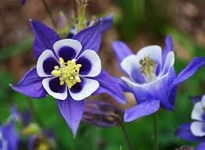

Аквілегія колумбійська
Аквілегія колумбійська — Квітка Зоряного Вітру У самому серці Сяйливої Долини, де час тече повільніше, а повітря дзвенить від чар, росте загадкова рослина — Аквілегія колумбійська, або, як її називають місцеві ельфи, Квітка Зоряного Вітру. я квітка не схожа на жодну іншу. Її пелюстки ніби зроблені з кольорового світла — вдень вони переливаються від небесно- блакитного до вогняно-червоного, а вночі починають світитися сріблястим сяйвом, як зорі. Але головна магія Аквілегії — вміння чути бажання серця. 🌬️ Якщо прошепотіти своє найпотаємніше бажання і вдмухнути його в серединку квітки, пелюстки легенько змахнуть, як крила, і віднесуть твоє бажання в саме небо. Кажуть, хто по-справжньому щирий, отримає знак — наступного дня на його плечі може сісти метелик із пелюстковими крилами — вісник виконання бажання. 🌿 Але не кожен може знайти Аквілегію колумбійську. Вона росте тільки там, де дитяча уява сильніша за дорослу логіку, де сміх і мрії живуть разом із вітром, і де друзі завжди поруч. а легендою, одного разу хлопчик на ім’я Ілюша знайшов таку квітку і прошепотів їй бажання про чарівний світ, де завжди буде місце добру, грі і відкриттям. І відтоді в кожному місті з’являється хоча б одна квітка Зоряного Вітру — для того, хто вміє вірити.

Зоряні лілії
Зоряні лілії — Охоронці Небесної Тиші У тиші найвищих небесних гір, де не літають навіть птахи, а лише зорі лишають свої сліди в повітрі, росте одна з найдивовижніших квітів у всьому всесвіті — Зоряна лілія. Ця квітка не народжується з насіння — вона падає з хвоста комети, коли та пролітає занадто близько до Землі. В момент падіння лілія спалахує синім світлом і, мов метеор, вростає в землю, випускаючи сріблясті корені в саму глибину світу. 🌌 Її пелюстки — це мініатюрні галактики. Якщо вдивитись у них, можна побачити, як обертаються планети, мерехтять далекі зорі й народжуються нові сонця. Саме тому давні маги вважали Зоряні лілії живими картами неба. Але найсильніша їхня магія — уміння зцілювати серце. Не тіло — саме серце. Якщо хтось сумує, втратив надію або забув, як мріяти, зоряна лілія розквітає поруч і своїм сяйвом огортає душу теплом, ніби нічне небо обіймає мандрівника. 🌠 Ще кажуть, що коли двоє друзів одночасно побачать цвіт Зоряної лілії, між ними назавжди виникає невидимий Зв’язок — ні відстань, ні час уже не можуть їх розлучити. Ніхто не садить зоряні лілії — вони самі з'являються там, де найбільше потрібне світло.


Чорна петунія
Чорна Петунія — Квітка Демонічного Зору Колись давно, у світі, що був розірваний між світлом і тінню, з’явилася Чорна петунія — квітка, створена з останньої сльози темного володаря ночі. Вона не росте, як звичайні квіти. Вона вибирає місце, де багато страху, болю чи нічних жахів… і там проростає. 🌘 Її пелюстки — глибоко-чорні, як бездонна безодня, але якщо довго дивитись на них, у центрі можна побачити… себе. Але не таким, як ти є — а таким, яким тебе бачить твій найбільший страх. Кажуть, що Чорна петунія шепоче ночами. Тихо-тихо, прямо в розум: "Ти справді знаєш, хто ти?.." 👁🗨 У неї є око в самому серці квітки. Воно не завжди відкрите. Але коли квітка дивиться на когось — вона бачить його душу. І якщо душа зла — нічого не станеться. Але якщо добра — квітка спробує її поглинути... 🌫️ Старі чаклуни вважали, що з Чорної петунії можна зробити чорнило для написання заборонених заклять, які оживляють тіні, викликають кошмари і відкривають ворота в інші виміри. Це не просто рослина — це випробування. І лише той, хто не боїться темряви всередині себе, може підійти до Чорної петунії і лишитись собою.